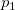

片側検出力：
両側検出力
: 各グループのサンプルサイズ
: 母比率1
: 母比率2
: 正規分布のレベルの上側棄却限界値
: 正規分布のレベルの両側棄却限界値
は標準正規分布の累積分布関数を表しています。
Originは、検出力等価で反復アルゴリズムを使用しています。各反復において、トライアルサンプルサイズのためのパワーが評価され、評価されたパワーが整数サンプルサイズに対応する値、および、目標値よりも大きい、最も近い到達したときに反復は停止されます。
/math-7b8b965ad4bca0e41ab51de7b31363a1.png) : 各グループのサンプルサイズ
: 各グループのサンプルサイズ/math-3abc4a58be38c24030120ec6c3464783.png) : 正規分布の
: 正規分布の/math-7b7f9dbfea05c83784f8b85149852f08.png) レベルの上側棄却限界値
レベルの上側棄却限界値/math-1cf3a44a9e37199f38d0e49c787182c9.png) : 正規分布のレベルの両側棄却限界値
: 正規分布のレベルの両側棄却限界値/math-800618943025315f869e4e1f09471012.png) は標準正規分布の累積分布関数を表しています。
は標準正規分布の累積分布関数を表しています。